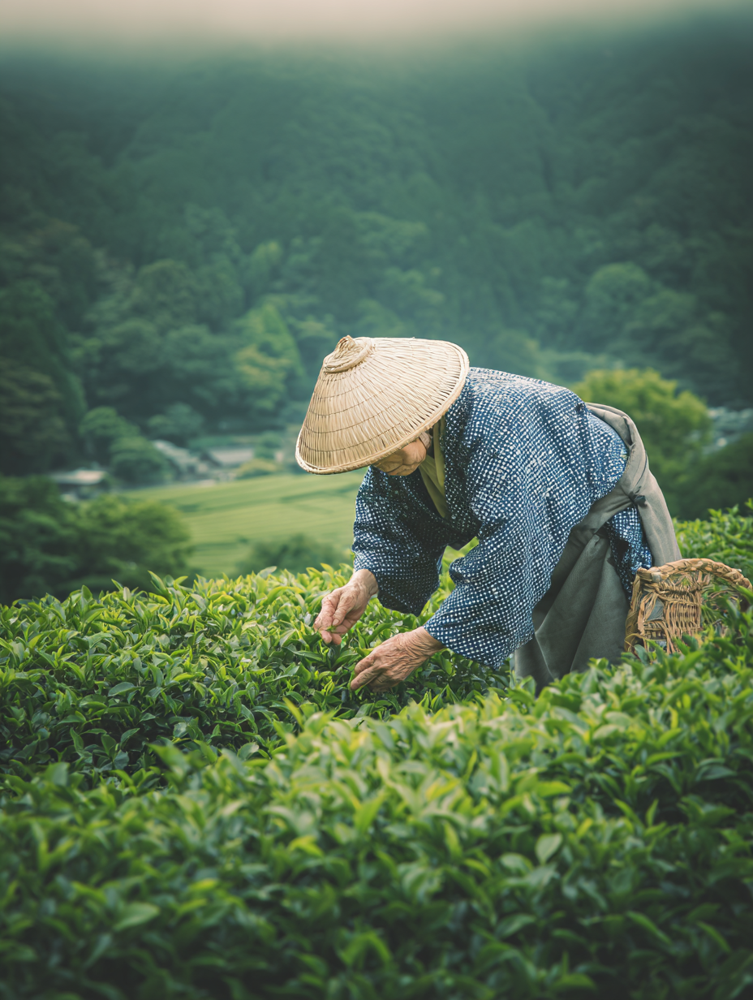

Full Origin Visibility
Every lot is traceable to a specific farm, harvest window, and region in Japan. Your team gets the context to say — with confidence — exactly what's in the cup.
Lot-verified origin, multi-farm supply network, and café-ready consistency — so you can focus on the cup, not the supply chain.

"Every bag of matcha carries the story of a farm family that has spent generations perfecting something most people will never see. Our job is to make sure cafes can tell that story - and never run out of it."
Three structural risks that can weaken cafe matcha programs.
Most U.S. distributors cannot confirm region, farm, or harvest year. "Sourced from Japan" alone no longer answers customer questions about quality, transparency, and sourcing ethics.
Japanese tencha prices rose sharply between 2023 and 2025 while producer numbers continue to decline. Many specialty cafes rely on a single supplier, making stockouts and menu instability more likely.
Many offers focus on commodity volume, not cafe workflow. Teams still struggle with grade selection, recipe consistency, lead-time visibility, and customer-facing origin communication.
Every lot is traceable to a specific farm, harvest window, and region in Japan. Your team gets the context to say — with confidence — exactly what's in the cup.
We source across multiple partner farms, so a single harvest shortfall doesn't become your stockout. Stable supply planning starts from your first order.
We provide grade guidance, latte performance benchmarks, and recipe support so quality stays the same across shifts, seasons, and staff changes.
Beyond wholesale: barista training, POP cards, and origin storytelling tools. The more embedded we become in your success, the harder we are to replace.
Tea bushes are covered to reduce sunlight, encouraging chlorophyll and L-theanine production.
Only the first flush leaves are selected for higher sweetness and lower bitterness.
Short steaming and careful drying preserve color, aroma, and freshness.
Stems and veins are removed to produce tencha, determining final grade and smoothness.
Granite mills rotate at controlled speeds to protect aroma and texture.
Color, aroma, and taste are evaluated; matcha is stored cold with protective packaging.